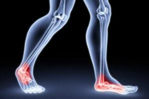
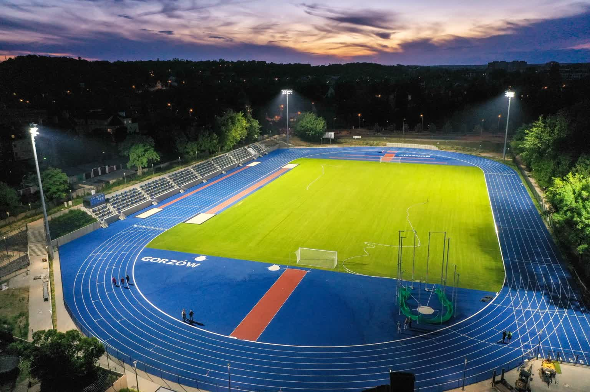
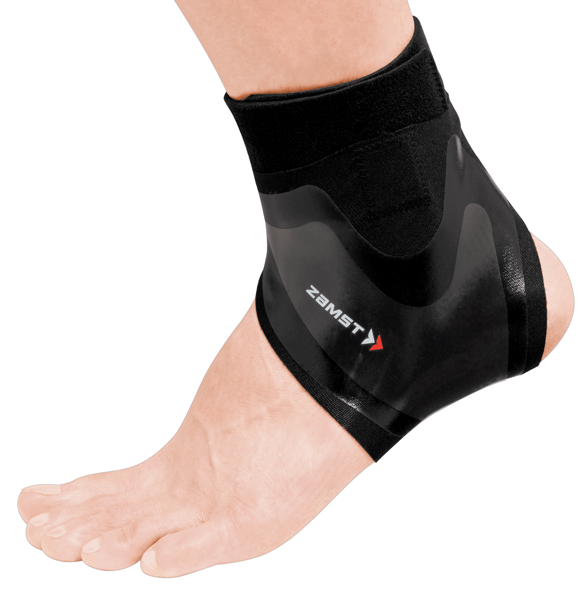

Przejdź na samą górę strony Data: 02.10.2023r
Dzisiaj nie jest mój szczęśliwy dzień. Podczas treningu krzywo stanąłem i skręciłem kostkę. Na początku nic nie czułem jednak po około godzinie
zacząłem czuć ból. Kostka bardzo spóchła i zaczerwieniła się. Udałem się jak najszybciej do lekarza specialisty aby zdiagnozował uraz. Wtedy
dowiedziałem się właśnie, że skręciłem kostkę. Niestety wypadam z trningu na około 2 tygodnie :(.

Wpis 2
Przejdź na samą górę strony Data: 07.10.2023r
Czuje się coraz lepiej, moja stopa już nie boli, powoli mogę zacząc chodzić na dłuższe odległości. Kostka regeneruje się szybciej niż
przypuszczałem. Jestem zadowolony z efektów.
Wpis 3
Przejdź na samą górę strony Data: 14.10.2023r
Już powoli zaczynam wracać do regularnych treningów. Dzisiaj miałem pierwszy trening na stadionie. Stopa już nie boli, więc powoli wdrażam się
w nowy cykl treningowy. Pobiegam kilka dni i zobaczę jak się będę czuł.

Wpis 4
Przejdź na samą górę strony Data: 18.10.2023r
Czuję się świetnie, mogę już robić cięższe treningi, gdyż stopa jest już zdrowa, goi się dalej, ale lekarz powiedział, że jest już pełna sił.
Jedynie o czym muszę pamiętać to o noszeniu specialnej skarpety do ustabilizowania kostki, ale ona w niczym nie przeszkadza a tylko pomaga w lepszym
bieganiu.
Ciekawostka
Ta skarpeta jest naprawdę wygodnia do codziennego noszenia. A tutaj przykład jak ona wygląda:
